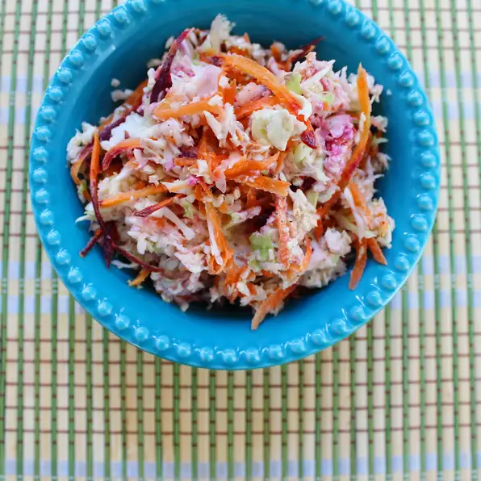

Texas Coleslaw

Texas Coleslaw Recipe
This Texas Coleslaw recipe is good to go with many meals such as burgers, pulled pork, chicken or fish.
Ensure the freshest ingridients are used for best results and keep refridgerated when not in use.
Ingridients
- 1 Cup Mayonnaise
- 1 Tablespoon lime juice
- 1 Tablespoon ground cumin
- 1 Teaspoon cayenne pepper
- 1 Teaspoon salt
- 1 Teaspoon ground black pepper
- 1 Green Cabbage
- 1 Large Carrot, shredded
- 2 Green onions
- 2 radishes sliced
Directions
- Finely chop all vegetables and place aside
- In a glass bowl mix together the mayonnaise, lime, pepper, cumin and salt
- Mix in the chopped vegetables and serve